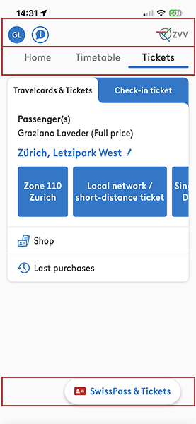

Modul 335 Mobile Applikationen, Tag 1 Vormittag. Zeitbudget 45 Minuten.
Die Zeitangabe ist ein Richtwert. Sie sagt dir, wie lange der Kursersteller gerechnet hat. Brauchst du deutlich länger, melde dich. Bist du deutlich schneller, nimm die Zusatzaufgabe.
| HANOK | Ziel |
|---|---|
| 1.3 | Kennt die Eigenschaften unterschiedlicher mobiler Geräte bezüglich Displaygrösse und Ausrichtung und der Eingabeoptionen |
| 2.3 | Kennt die Besonderheiten der App-Architekturen bezüglich Funktionalitäten, Möglichkeiten und Grenzen der mobilen Devices |
Nach diesem Auftrag kannst du:
Du gibst nichts ab. Deine Notizen gehören dir. Du führst sie in deinem eigenen Heft oder in einer Datei. Vergleich sie danach mit dem Lösungsmaterial.
Fertig bist du, wenn das stimmt:
Mach deine Screenshots für dich selbst und nummerier sie so, dass die Nummern zu deiner Tabelle passen.
Dazu der 01A Wissenscheck. Er ist unbenotet und beliebig wiederholbar.
Warum dieser Auftrag ganz am Anfang steht. Java kennst du schon. Der Unterschied zwischen einer Desktop-Anwendung und einer App liegt nicht in der Sprache. Er liegt im Gerät. Kleiner Bildschirm, Finger statt Maus, Drehung, Akku, jederzeit eine Unterbrechung. Jede Entscheidung, die du in den nächsten fünf Tagen im Code triffst, hat einen dieser Punkte als Grund. Wer sie heute einmal selbst gesehen hat, versteht später, warum Android so gebaut ist, wie es gebaut ist.
Eine App zu programmieren ist ähnlich wie eine Desktop-Anwendung zu programmieren. Die Sprache Java kennst du bereits aus anderen Modulen.
Es gibt aber Unterschiede, die alles verändern. Der Bildschirm ist klein. Bedient wird mit dem Finger, nicht mit der Maus. Das Gerät dreht sich. Der Akku ist begrenzt. Jederzeit kann ein Anruf deine App unterbrechen.
Wer das nicht berücksichtigt, baut Apps, die nach drei Tagen wieder deinstalliert werden. Ein schönes Design allein reicht nicht.
Der Satz, um den es heute geht. Eine Liste dieser Unterschiede bekommst du heute in zwei Minuten von einer KI. Das ist keine Leistung mehr. Die Leistung besteht darin, zu prüfen, ob die Liste stimmt.
Das sind alle Werkzeuge, die du für diesen Auftrag brauchst. Mehr nicht.
| Werkzeug | Wofür |
|---|---|
| KI-Chat nach Wahl | Erzeugt dir in Teil A die Rohliste. Nur dort erlaubt |
| Dein eigenes Smartphone | Liefert die Belege. Der Emulator taugt dafür nicht |
| Das Notizblatt | Dein Formular. Eine Zeile pro Unterschied. Es steht in diesem Dokument, am Schluss von Abschnitt 02 |
| Screenshot-Funktion deines Geräts | Beweist, dass du wirklich hingeschaut hast |
| Google Classroom | Verteilung der Unterlagen |

Welche Angaben auf dem Notizblatt Pflicht sind:
| Spalte | Pflicht | Bemerkung |
|---|---|---|
| Status | in jeder Zeile | KI, WEG oder EIGEN. Die Legende steht auf dem Notizblatt |
| Faktor | in jeder Zeile | Ein Wort oder zwei, zum Beispiel Bildschirmgrösse |
| PC oder Notebook | in jeder Zeile | Konkret, mit Zahl wenn möglich |
| Smartphone | in jeder Zeile | Konkret, mit Zahl wenn möglich |
| Einfluss auf die Programmierung | in jeder Zeile | Was der Programmierer deswegen anders macht. Nicht was der Benutzer merkt |
| Beleg | in mindestens fünf Zeilen | App-Name und was dort konkret passiert |
| Screenshot Nr. | in jeder Zeile mit Beleg | Fortlaufende Nummer, passend zu deinen Bilddateien |
Denk kurz darüber nach, bevor du anfängst. Aufschreiben musst du nichts davon. Es geht nicht um richtig oder falsch, sondern darum, dass du eine Erwartung hast, bevor du loslegst.
Diese vier Fragen kommen im Wissenscheck wieder. Dort bekommst du zu jeder Antwort sofort eine Rückmeldung. Wer hier kurz nachdenkt, hat den Wissenscheck in drei Minuten durch.
A1Die KI fragen.
Lass dir von einer KI deiner Wahl eine Tabelle erzeugen. Frage nach den Unterschieden zwischen PC und Smartphone und deren Einfluss auf die Programmierung. Verlange mindestens acht Zeilen.
A2Übertragen.
Übertrage das Ergebnis in deine Tabelle. Die Spalte Beleg lässt du vorerst leer. Die Spalte Screenshot Nr. ebenfalls.
Übernimm die Zeilen so, wie die KI sie geliefert hat. Streiche noch nichts. Auch das, was dir seltsam vorkommt, bleibt vorerst stehen.
KI ist in Teil A ausdrücklich erlaubt und erwünscht. Das ist der einzige Teil, in dem du sie benutzen darfst.
So prüfst du Teil A.
Jetzt kommt die eigentliche Arbeit. Nimm dein Smartphone. Öffne drei Apps, die du täglich benutzt.
B1Belege suchen.
Suche für mindestens fünf Zeilen deiner Tabelle eine echte Stelle in einer echten App, die genau das zeigt. Trage in die Spalte Beleg ein, welche App es ist und was dort konkret passiert. Mach einen Screenshot davon und nummeriere ihn.
Die Zeilen, die du belegen konntest, bekommen den Status KI.
| Art | Beispiel | Warum |
|---|---|---|
| Guter Beleg | WhatsApp, Eingabefeld. Sobald ich tippe, verdeckt die Tastatur die untere Hälfte des Chats. Die Liste scrollt automatisch nach oben | Nennt App, Ort und Verhalten. Man könnte es nachstellen |
| Schlechter Beleg | Smartphones haben kleine Bildschirme | Das ist keine Beobachtung. Das ist die Behauptung noch einmal |
B2Streichen.
Jede Zeile, die du nicht belegen kannst, bekommt den Status WEG. Auch dann, wenn sie plausibel klingt. Lösch sie nicht. Am Ende soll man sehen, was die KI behauptet hat und was davon übrig blieb.
B3Drei Stellen, die du selbst anschaust.
Das sind drei Dinge, die eine KI-Liste fast immer zu flach beschreibt. Schau sie dir auf deinem Telefon an. Jede der drei gibt dir eine neue Zeile für dein Notizblatt.
| Was du machst | Woran du merkst, dass du es hast |
|---|---|
| Die Drehung. Öffne eine App und dreh dein Telefon um 90 Grad | Du nennst zwei Dinge, die sich sichtbar ändern, und eine Folge davon für den Code |
| Die Unterbrechung. Tipp etwas in eine App ein, ohne abzuschicken. Wechsle für eine Minute zu einer anderen App. Geh zurück | Du kannst sagen, ob deine Eingabe noch da ist. Du hast es bei einer zweiten App wiederholt und den Unterschied notiert |
| Der Fehlgriff. Finde eine Stelle, an der du dich mit dem Finger vertippst. Zwei Knöpfe zu nah beieinander, oder ein Ziel, das zu klein ist | Du hast einen Screenshot mit der markierten Stelle. Du kannst sagen, warum es mit der Maus kein Problem wäre |
Trag jede der drei als eigene Zeile ein, mit dem Status EIGEN. Ergänze auch alles andere, was dir unterwegs aufgefallen ist und in der KI-Liste fehlt. Diese Zeilen sind die wertvollsten deiner ganzen Abgabe.
In Teil B ist keine KI erlaubt. Hier zählen nur deine eigenen Beobachtungen. Eine KI kann dein Telefon nicht anschauen.
So prüfst du Teil B.
C1Im Kurs.
Wir sammeln gemeinsam:
C2Wenn du allein arbeitest.
Beantworte dieselben drei Fragen in der Classroom-Frage 01A Frage - Was die KI nicht wusste. Dort siehst du die Antworten der anderen. Lies mindestens drei davon und schau, ob jemand eine Zeile hat, die dir gefehlt hat.
C3Erklären.
Erkläre einem Lerngspänli in eigenen Worten, warum "der Bildschirm ist kleiner" keine brauchbare Antwort auf die Frage nach dem Unterschied ist. Nimm eine Zeile aus deinem eigenen Notizblatt als Beispiel.
Wenn du allein arbeitest, schreib die Erklärung in drei Sätzen unter deine Tabelle.
So prüfst du Teil C.
Zum Vergleichen. Eine Beispieltabelle mit dem richtigen Detailgrad, die Antworten zu den Denkfragen und die Musterantworten zu den drei Stellen aus B3 findest du im Classroom-Material 01A Lösung - Mobile Applikationen. Schau erst hinein, wenn du selbst fertig bist.
Zuerst die Pflichtaufgabe fertig. Dann erst hier weiter.
Auftrag: Frag dieselbe KI ein zweites Mal, aber stell die Frage anders. Zum Beispiel aus der Sicht eines Benutzers statt aus der Sicht eines Entwicklers. Vergleiche die zwei Antworten.
Und die Frage, die dazugehört: Wenn dieselbe KI auf zwei Fragen zwei verschiedene Listen liefert, was sagt das über die Liste aus? Und was folgt daraus für die Art, wie du eine KI fragst?
Keine Musterlösung. Auch nicht im Lösungsmaterial. Es gibt mehrere richtige Antworten.
| Das siehst du | Ursache | Das machst du |
|---|---|---|
| Die KI liefert nur drei oder vier Zeilen | Die Frage war zu allgemein | Verlange die Anzahl ausdrücklich. Frag nach einer Tabelle mit mindestens acht Zeilen |
| Alle Zeilen der KI klingen gleich | Die KI hat einen Punkt in vier Varianten geliefert | Fasse sie zu einer Zeile zusammen und frag nach vier weiteren, anderen |
| Du findest zu einer Zeile keinen Beleg | Das ist der Normalfall und der Zweck der Übung | Zeile als gestrichen markieren. Nicht löschen. Sie ist Teil deiner Arbeit |
| Dein Beleg klingt wie die Behauptung | Es fehlt der Ort und das Verhalten | Nenne App, Bildschirm und was genau passiert. Siehe die Beispieltabelle in Teil B |
| Du hast kein Smartphone dabei | Der Emulator hat keine echten Apps, keine Sensoren und keine Anrufe | Arbeite zu zweit. Siehe der Hinweis am Schluss |
| Der Screenshot zeigt nichts Erkennbares | Der Ausschnitt ist zu gross oder zu klein | Ganzer Bildschirm, und die Stelle mit einem Pfeil oder einem Kreis markieren |
| Du weisst nicht, was in die Spalte Einfluss gehört | Da steht oft nur, was der Benutzer merkt | Frag dich: Was muss ich deswegen im Code anders machen als am PC? |
Das hier ersetzt das frühere Arbeitsblatt. Du füllst es nicht in Google Classroom aus, sondern in deinem eigenen Heft, in einer Textdatei oder auf einem Ausdruck dieser Seite. Es gehört dir, und es wird nicht eingesammelt.
Warum du es trotzdem führst. Was du selbst aufschreibst, bleibt. Und am Prüfungstag hast du keine Anleitung, sondern nur das, was du geübt hast.
Legende für die erste Spalte:
| Kürzel | Bedeutung |
|---|---|
| KI | Kommt aus der KI-Liste und du konntest es belegen |
| WEG | Kommt aus der KI-Liste, du konntest es nicht belegen. Bleibt stehen, gilt aber als gestrichen |
| EIGEN | Hast du selbst gefunden. Stand in keiner KI-Liste |
Die erste Zeile ist vorgegeben. Sie zeigt dir, wie genau eine Zeile sein muss. Zu ihr brauchst du keinen Beleg. Bau die Tabelle so breit, wie du sie brauchst.
| Status | Faktor | PC oder Notebook | Smartphone | Einfluss auf die Programmierung | Beleg: welche App, was genau passiert | Screenshot Nr. |
|---|---|---|---|---|---|---|
| KI | Bildschirmgrösse | 19 bis 27 Zoll | 6 bis 7 Zoll | Weniger Elemente pro Ansicht, Inhalte müssen scrollbar sein | vorgegebenes Beispiel, kein Beleg nötig | - |
Trag hier ein, was jeder Screenshot zeigt. Die Nummer muss zur Nummer in der Tabelle passen. Die Bilddateien behältst du bei dir.
| Nr. | App | Was auf dem Bild zu sehen ist |
|---|---|---|
| 1 | ||
| 2 | ||
| 3 | ||
| 4 | ||
| 5 | ||
| 6 |
| Zeitbudget | 45 Minuten. Denkfragen 3, Teil A 8, Teil B 24, Teil C 10 |
|---|---|
| Sozialform | Einzelarbeit. Auswertung im Plenum, C3 zu zweit |
| Aufgabenart | Recherche und Überprüfung |
| Voraussetzung | Keine fachliche. Eigenes Smartphone nötig |
| KI | In Teil A erlaubt und erwünscht. In Teil B und C nicht erlaubt. Bei der Zusatzaufgabe erlaubt |
| Abgabe | keine. Der Wissenscheck des Halbtags genügt |
| Name | Typ | Einstellung |
|---|---|---|
| 01A Auftrag - Mobile Applikationen | Material | Schüler können Datei ansehen. Das ist dieses Dokument. Das Notizblatt steht darin |
| 01A Wissenscheck - Mobile Applikationen | Aufgabe mit Quiz | Unbenotet, beliebig oft wiederholbar |
| 01A Lösung - Mobile Applikationen | Material | Schüler können Datei ansehen |
Dazu die Frage 01A Frage - Was die KI nicht wusste als Frage mit sichtbaren Antworten, für alle, die den Block allein durcharbeiten.
Einführung durch die Lehrperson. Keine eigene. Block 1 beginnt mit 15 Minuten Start und Setup. Darin steckt die Begrüssung, die Kontrolle des Vorbereitungsauftrags und der Ablauf der fünf Kurstage. Danach startet 01A direkt.
| Art | Was |
|---|---|
| Hardware | Eigenes Notebook, eigenes Smartphone mit mindestens drei täglich genutzten Apps |
| Software und Tools | KI-Chat nach Wahl, Google Classroom |
| Dokumente | Dieses Dokument, mit dem Notizblatt am Schluss von Abschnitt 02 |
| Buch | Keines. Das Buch beginnt erst bei 01B |
Kein Smartphone dabei? Arbeite mit einer Kollegin oder einem Kollegen zusammen. Der Emulator taugt hier nicht. Er hat keine echten Sensoren, keine Anrufe und keine installierten Apps.
Modul 335 | Tag 1 Vormittag | Auftrag 01A | Version 2 | 11.08.2026